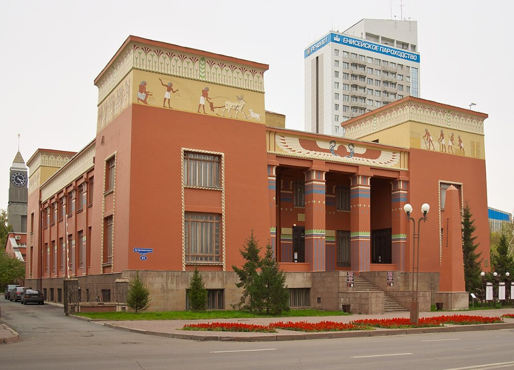
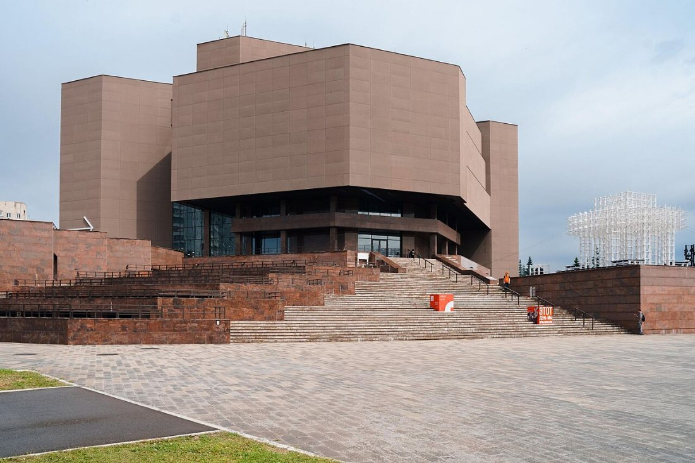
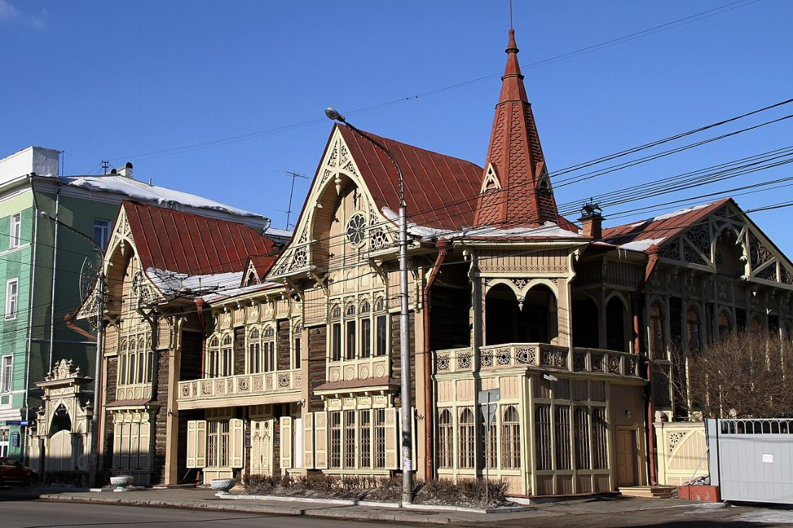
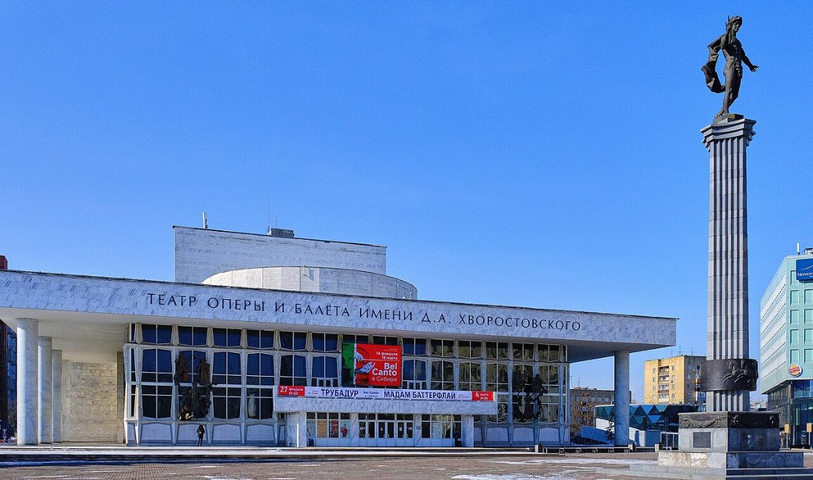
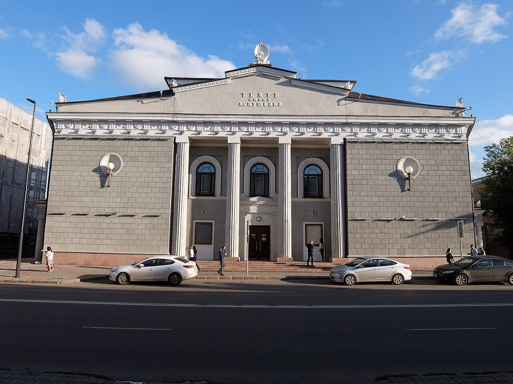
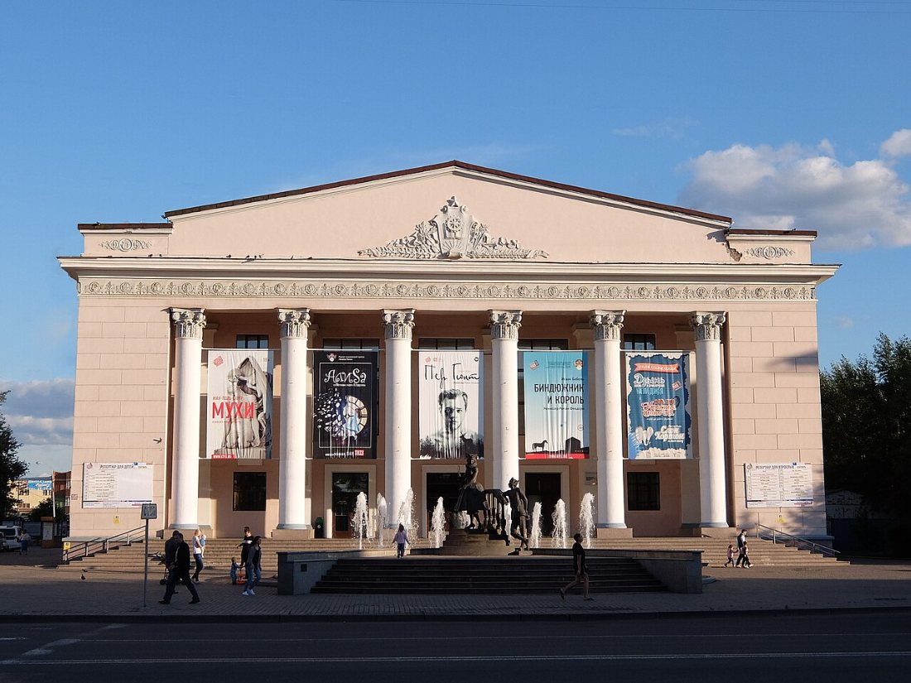

Красноярский краевой краеведческий музей
Основан в 1889 году. Здание в «египетском» стиле на набережной Енисея. Экспозиции об археологии, природе и истории края.
Официальный сайт: kkkm.ru
город на Енисее: скалы, мосты и сибирская история
Красноярск — культурная столица Центральной Сибири. В городе десятки музеев и театров; ниже собраны самые известные из них со ссылками на их официальные сайты.

Основан в 1889 году. Здание в «египетском» стиле на набережной Енисея. Экспозиции об археологии, природе и истории края.
Официальный сайт: kkkm.ru

Открыт в 1987 году. Сегодня это площадка современного искусства, выставок и фестивалей.
Официальный сайт: mira1.ru

Расположен в старинном деревянном особняке в центре города. Рассказывает о писателях, связанных с Красноярским краем, и прежде всего о Викторе Астафьеве.

Основан в 1976 году. Оперные и балетные спектакли, концерты и фестивали.
Официальный сайт: krasopera.ru

Один из старейших театров Сибири, работает в историческом здании в центре города.
Официальный сайт: sibdrama.ru

Основан в 1964 году. Спектакли для детей, подростков и взрослых.
Официальный сайт: ktyz.ru